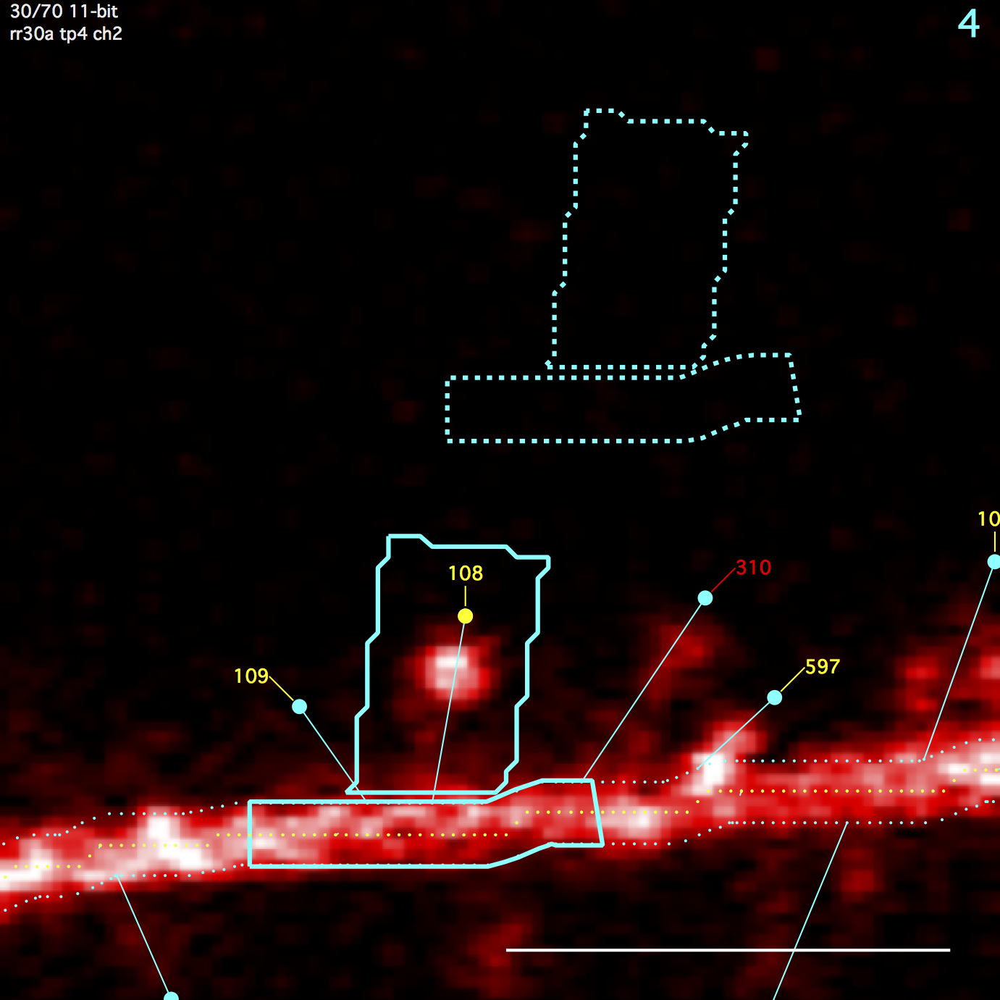
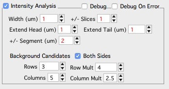
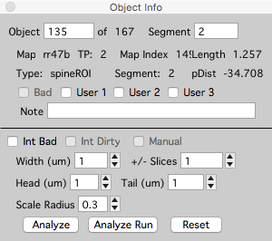
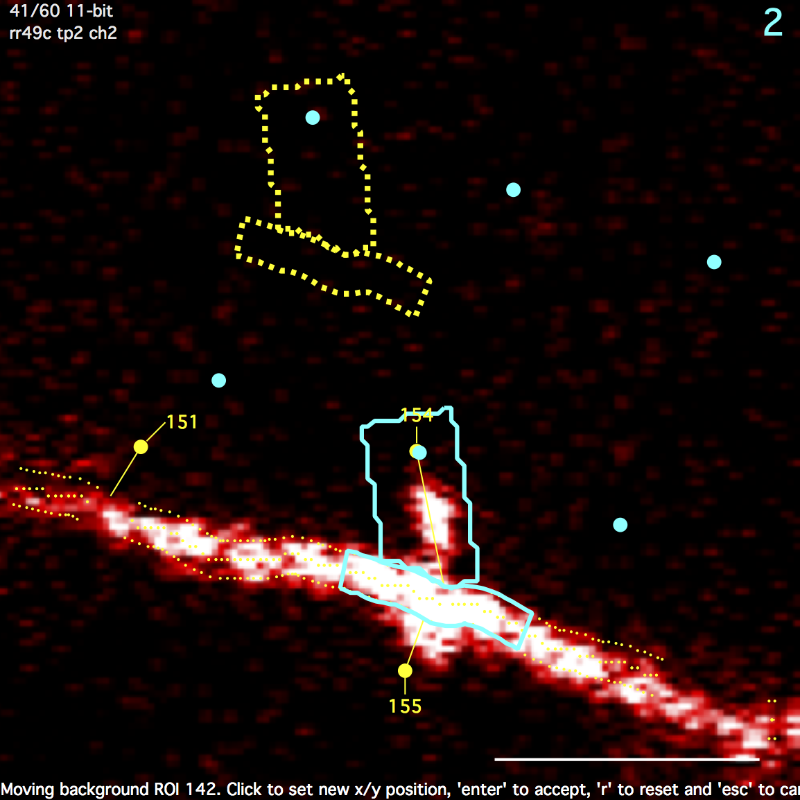

Intensity
Algorithm and Strategy
All intensity analysis is performed by calculating statistics (Sum, Mean, standard-deviation, N) from the intensity values of pixels within a number of 3D regions-of-interest (ROI). Further analysis is then derived by performing algebra between these ROIs.

Spine ROI
A polygon surrounding a spine. Starts as a rectangle and then overlapping regions of the backbone/dendrite ROI is subtracted. Any remaining disjoint regions (on other side of backbone/dendrite) are then removed. The spine ROI is centered in the same image plane as the spine head. Three parameters specify spine ROI: width, extend head, and extend tail.
Backbone/Dendrite ROI
A polygon centered on the spine connection point and extending a fixed distance (um) up and down the backbone/dendrite line. The backbone/dendrite ROI is centered in the same image plane as the spine connection point. The distance to extend up and down the backbone/dendrite line is set with ‘+/- Segment (um)’
Background ROI
Both the spine roi and the backbone/dendrite roi get their own background ROIs. The spine background ROI is the same size/shape as the spine ROI. Likewise, the backbone/dendrite background ROI is the same size/shape as the backbone/dendrite ROI. The position of these background ROIs is the position that gives the minimal intensity from a number of candidate positions (a 3x3 grid emanating from the spine head). All background ROIs (both spine and backbone/dendrite) are centered in the same image plane as the spine head.
Please note, parameters controlling the grid of candidate background positions is not exposed to the user.
Running Intensity Analysis
For a stack, intensity analysis is run from a stack window using the ‘Analyze Intensity’ button. This button is in the left panel, open the left panel for a stack with keyboard ‘[’.

For a map, intensity analysis is run from the main map manager panel using the ‘Intensity’ tab.
Parameters

Global intensity analysis parameters are set in the stack db options panel. These parameters are used for every spine in a map.
Once intensity analysis has been run, the parameters of individual spines can be set using the ‘Object Info’ panel in a stack. Open the Object Info window in a stack with keyboard ‘i’.

- Width (um). Width of spine ROI centered on the spine line.
- Extend head (um). Distance to extend the spine ROI beyond its spine head.
- Extend tail (um). Distance to extend the spine ROI beyond it connection point with the backbone/dendrite..
- +/- Slices. The statistics (Sum, Mean, SD, N) of each spine, backbone, and background ROI is calculated after expanding the ROI up and down in Z-dimension.
-
+/- Segment (um). The distance (um) to extend the backbone/dendrite ROI up and down the backbone/dendrite line.
- Background - Both Sides. Only available as a global options.
- Background Rows. Only available as a global options.
- Background Row Mult. Only available as a global options.
- Background Columns. Only available as a global options.
-
Background Column Mult. Only available as a global options.
- Scale Radius (um). Only available for individual spines using the Object Info Panel. When intensity analysis is run (for a map), each spine is assigned a radius (um) following the radius of the segment it is attached to. Once intensity analysis has been run, this radius can be set for individual spines in the Object Info panel.
Intensity Analysis Output
The following statistics are calculated and displayed in the X/Y statistics lists in the Plot Panel.
A table of these statistics can be displayed for each stack in the stack db panel. To do this: (1) in a stack window, open the stack db panel with keyboard ‘[’, (2) click on the point list and (3) use keyboard ‘i’ for intensity.
Please note, ‘u’ is for user. User stats are simple algebra on the core intensity analysis.
Spine ROI
sSum : spine sum
sMean : spine mean
sSD : spine standard deviation
sN : # pixels in spine roi
Spine Background ROI
sbSum : spine background sum
sbMean : spine background mean
sbSD : spine background standard deviation
sbN : # pixels in spine background roi
Backbone/Dendrite ROI
dSum : dendrite sum
dMean : dendrite mean
dSD : dendrite standard deviation
dN : # pixels in dendrite roi
Backbone/Dendrite Background ROI
dbSum : dendrite background sum
dbMean : dendrite background mean
dbSD : dendrite background standard deviation
dbN : # pixels in dendrite background roi
Background subtracted ROIs
ubssSum : background subtracted spine sum
ubssMean : background subtracted spine mean
ubsdSum : background subtracted dendrite sum
ubsdMean : background subtracted dendrite mean
Cross channel stats
utssmoss : this spine sum minus other spine sum.
This can be read as '(t)his (s)pine (s)um (m)inus (o)ther (s)pine sum'
utsmmosm : this spine mean minus other spine mean
utssdoss : this spine sum divided by other spine sum
utsmdosm : this spine mean divided by other spine mean
utssmods : this spine sum minus other dendrite sum
utsmmodm : this spine mean minus other dendrite mean
utssdods : this spine sum divided by other dendrite sum
utsmdodm : this spine mean divided by other dendrite mean
Moving the background ROI

Clicking on the spine backgrond ROI will enable an edit mode where the user can specify the background position. This edit mode also shows the candidate background positions.
- Mouse-Click to set a new position.
- ‘Enter’ to accept new position.
- ‘r’ to reset spine position. A new position will automatically be chosen next time spine is analyzed.
- ‘esc’ to cancel move
Errors and Warnings
When the intensity analysis has a problem analyzing a spine, errors and warnings will be set for that spine. Most errors are due to an ROI going off the image or in problems with drawing a valid backbone ROI (near the end of a segment).
There are two ways to browse errors and warning:
- Use the ‘Errors & Warnings’ button in the search panel.
- Examine the ‘Errors’ column in a stacks point list panel
Be careful of spines that are very close to each other. As spine density increases, the spine ROI of a spine will start to overlap with the spine ROI of its neighbors.
There are two ways to check for nearby (high density spines). These are slightly different measurements, the first is examining closeness of the spine head as a 3D point, the second is examining closeness by looking at the connection point along a segment.
- Use the ‘Closeness’ button in the search panel too find spine heads that are close to other spine heads.
- Use the ‘nnDist’ column in the point list panel to find spines that are connected to a segment close to other spines connection points.
Errors and Warnings are
|
|
|

|
|
|
|
Intensity Dirty
A spines intensity analysis becomes ‘dirty’ and needs to be re-run whenever the geometry of a spine changes or the geometry of its connected spines change.
Intensity analysis can be run on just ‘dirty’ spines using the ‘Only Dirty’ checkbox in the Intensity Tab of the main map manager panel. Dirty spines can be browsed using ‘Int Dirty’ in the main search panel.
A spines intensity analysis becomes dirty when:
- A spine is moved
- A spine is reconnected to the backbone
- Its analysis parameters are changed (width, extend head, etc.)
- Any of the other spines connected to it are changed
- Its dynamics are changed (addition, subtraction, persistent)